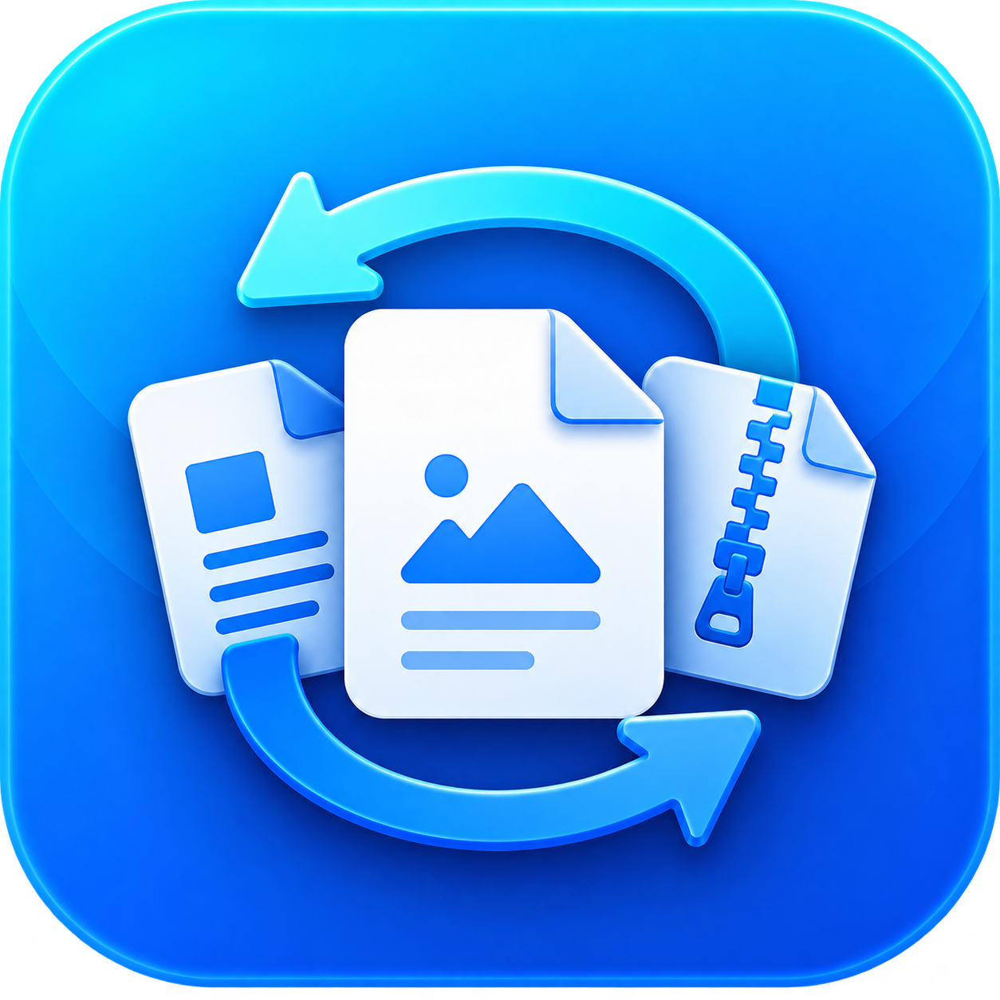

Conversión de formatos
Trabaja con imágenes, documentos de texto, hojas de cálculo, presentaciones, PDF, libros, formatos de marcado, archivos comprimidos, JAR y otros contenedores.

Aplicación de escritorio para Windows que permite convertir documentos, imágenes, PDF y otros formatos de forma local, además de integrar herramientas especializadas de PDF e imagen.
El proyecto reúne conversión de archivos y utilidades de procesamiento en una sola aplicación de escritorio. Las tareas se realizan localmente y los motores incluidos en el instalador no requieren que el usuario instale Python por separado.
Trabaja con imágenes, documentos de texto, hojas de cálculo, presentaciones, PDF, libros, formatos de marcado, archivos comprimidos, JAR y otros contenedores.
Incluye unión, división, extracción y reordenamiento de páginas, compresión y conversión PDF → DOCX.
Permite redimensionar, comprimir, crear PDF desde imágenes, mejorar resolución y quitar fondos.
La superresolución y la eliminación de fondos pueden ejecutarse con motores y modelos locales sin subir los archivos a servicios externos.
El roadmap se carga directamente desde el ROADMAP.md del proyecto. Puedes filtrar por estado y abrir cada versión para consultar objetivos, funciones y alcance sin mostrar una cadena de versiones separada.
Ver ROADMAP.mdPreparando roadmap…